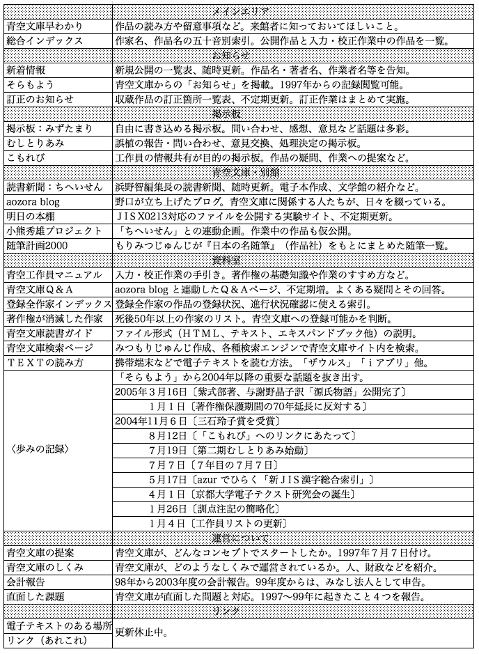

二〇〇五年一月一日、青空文庫のトップページに新しいロゴが掲げられた。著作権の保護期間を著作者の死後五〇年から七〇年へと延長しようとする動きに待ったをかける意思表示のロゴである。同じ日、青空文庫からのお知らせを掲載する〔そらもよう〕に、富田倫生は記している。
青空のぬくもりは、誰もが共に味わえる。
一人があずかって、その恵みが減じることはない。
万人が共に享受して、何ら不都合がない。
著作権法が保護の対象とする、創作的な表現にも、万人の共有を許す「青空」としての性格がある。……
一人があずかって、その恵みが減じることはない。
万人が共に享受して、何ら不都合がない。
著作権法が保護の対象とする、創作的な表現にも、万人の共有を許す「青空」としての性格がある。……
青空文庫は、インターネット上の図書館として一九九七年の“開館”以来、年を追うごとにその名を人びとへ浸透させている。来館者は、一日七〇〇〇人を越す。読書を目的とする人だけではなく、検索機能を利用して、たとえば言葉の用例を調べる研究者もいる。テキストファイルをダウンロードして、紙の本にする人もいる。掲示板〔みずたまり〕は、かすかな記憶を書き込むことによって、書名を忘れた本に再会できる“お尋ね本コーナー”となることもある。
先人の遺した“本”という知の財産を人びとの共有のものにしていこうという青空文庫の活動は、当然ながら著作権保護期間に大きな影響を受ける。
たとえば、坂口安吾の場合、すでに複数の作品が青空文庫の手によって電子化が準備され、保護期間を終える二〇〇六年一月一日をじっと待っている。もしも、保護期間が七〇年に延長されて、万が一、これまでに保護期間を終えた著作者にまで溯って適用するのならば、太宰治、新美南吉、中島敦、島崎藤村、泉鏡花、斎藤茂吉、堀辰雄、折口信夫、織田作之助、宮本百合子、林芙美子……、おびただしい数の作家の作品をいったん“倉庫”に仕舞い込まなければならない。もちろん、坂口安吾作品の公開は、二〇二六年の一月一日に延びる。自分の現在の年齢に二〇を足してみれば、一人の人間にとって、それがいかに長い年月か実感できよう。
著作者の権利は尊重する、と同時に、保護期間を終えた著作物は、みんなが自由に、手軽に、広範囲に利用できるようにしていく。これが青空文庫の目的といってもいいだろう。保護期間が延長されたとしても、その活動を根本から改める必要はないが、万人の共有を許す著作物が大きく損なわれることは確かだ。
しかし、青空文庫は最初からこのような目的を持っていたのではない。創設に関わった者たちの胸のうちには、それぞれの思いがあった。
一九九七年三月、横浜の中華料理店でささやかな会合があった。集まったのは、富田倫生、野口英司、八巻美恵、らんむろ・さてぃの四人。インターネットに電子図書館の実験サイトを開設しようというのが、その日のテーマだった。気楽な食事会ではあったが、どこから手をつけたらいいか、どんなしくみにしようか、これから何ができるか、話は尽きなかった。
図書館の名称は、富田の発案に異論はなかった。見上げれば遠く広がる「青空」と、手を伸ばせばそこにある「文庫」という言葉をつなげた極シンプルなものだった。この会合以前に、メンバー同士がメールをやり取りするうちに、いつしか実験サイト開設の試みは「青空文庫プロジェクト」と呼ばれていたのである。
青空文庫――どこか懐かしさを感じるこの名前が電子図書館のその後を方向づけていった、と今では言える。
当時、富田が考えていたことの一つに、絶版になってしまった本、経費の点などで出版できそうにもない本を電子化してインターネット上に公開する、ということがあった。これが広く浸透すれば、従来の出版社・取次店・書店とは違う流通ができる。つまり、自分を含めた多くの書き手に、作品発表の機会を増やせると考えたのだ。そこでは、著作によってお金を得るということより、広く将来にわたって作品が読まれていくことに重きを置いていた。
ノンフィクション作家の富田には、処女作である書き下ろし文庫の『パソコン創世記』（一九八五年）が版元の文庫分野からの撤退によって廃刊になったという経験がある。同書はその後、追加取材のうえ別の出版社から刊行されたが、そのときの版元の対応にも、富田には納得できないものがあった。
八巻には、また雑誌をつくりたいという思いがあった。インターネット上の雑誌なら、なにより制作費を抑えることができる。八巻は、仲間と一緒に一九七〇年代の終わりから八〇年代の半ばまで『水牛通信』という雑誌をつくっていた。原稿料や印税収入を第一目標とはしない書き手がいることも、フリーランスの編集者である八巻の知るところであった。
野口にとって、この実験サイトは、インターネット上に電子本のアーカイブをつくっていくことだった。紙の本と同じように、縦書きになり、ルビ（振り仮名）が付き、ページをめくるように読んでいくことができる電子本の作成ソフトウェアがある。これを利用すれば、パソコンでの読書も苦にならないはずだ。その電子本「エキスパンドブック」のコンテンツをネット上に増やしていく――これは、読書の形を変えるパイオニアワークになるんじゃないか。野口の期待は大きかった。
らんむろは、文学や演劇や映画が大好き。かつて英国の漱石博物館が募集した夏目漱石作品の入力ボランティアをやったこともある。だから、野口からの誘いに喜んで手を挙げたのだった。
富田たちをつなぐキーワードは、「エキスパンドブック」だった。この「エキスパンドブック」をつくるツールキットは、簡単に言えば、電子テキストを“本”の様式を持った“電子本”にまとめ上げるソフトウェアで、音楽や動画をリンクさせる拡張＝エキスパンド機能も付いていた。米国のボイジャー社が開発したもので、日本では一九九二年にジョイント・ベンチャーにより設立された株式会社ボイジャー（通称ボイジャー・ジャパン）が、その日本語版の開発・販売を行ない、九五年にリリースされたエキスパンドブック・ツールキット
 は、縦書き・ルビ対応を可能にした画期的なものだった。
は、縦書き・ルビ対応を可能にした画期的なものだった。八巻は、設立間もないボイジャーで電子本の編集を手伝っていた。だから、日本語版エキスパンドブック・ツールキットができあがっていく過程をリアルタイムで体験していた。富田の場合は、電子本の書評の仕事でエキスパンドブック・ツールキットのことを知り、そのコンセプトと機能に魅かれ、九三年には日本語版を開発中のボイジャーに出入りするようになった。ちなみに、富田は九五年に同社から電子本『パソコン創世記』を刊行している。
当時のボイジャーは、電子出版に関心を持つ人たちのサロンと化していた。エキスパンドブックに可能性を求める電子本作家や編集者が集まり、また、出版社や印刷会社からも注視されていたのである。社長の萩野正昭自身、レーザーディスクのソフト会社にいるときに、米国ボイジャー社の創業者ボブ・スタインと出会い、その“拡張する本”に魅せられて、会社の同僚三人とボイジャーを立ち上げたのだった。
野口は、萩野が独立する前の会社の部下だった。萩野の目には、まだ高嶺の花だったマッキントッシュ・コンピュータを買い込み、業務外に何やらやっている奇妙な若者と映っていたらしい。その野口も萩野に誘われて、九四年五月にはボイジャーの社員となっていた。
そして、九七年二月、青空文庫開設の契機が訪れた。富田が『本の未来』（アスキー出版局）を出版するとき、野口はその制作を手伝った。紙の本である『本の未来』を全文エキスパンドブック化して、付録のＣＤ‐ＲＯＭに収めるのが野口の仕事だった。
あるとき野口は、長文のテキストを公開しているウェブサイトを知らないかと富田に尋ねた。エキスパンドブックのブラウザーにウェブ上のテキストを流し込む機能が付いたので、その中に入れるコンテンツが欲しかったのだ。
富田から、岡島昭浩福井大学助教授（当時）の「日本文学等テキストファイル」のサイトを教えてもらった野口は、早速アクセスしてみた。
国語学者の岡島が公開していたのは、古典文学をはじめ著作権の保護期間の過ぎた国文学がほとんどだった。岡島自身が入力したものもあれば、他大学の研究室にリンクを張って公開しているものもある。公開作品一覧表には、あまり文学に馴染みのなかった野口でさえ知っている作家の名前が並んでいた。芥川龍之介、森鴎外、夏目漱石……。高校生のころ、国語の教科書で読んで印象深かった中島敦の「山月記」もあった。
野口は驚いた。著作権の保護期間が過ぎているにしても、ネット上に公開していいものだろうか。富田に聞くと、グレーな部分もあるが問題はないと言う。そこから話は、インターネット電子図書館に及んだ。
米国では七一年に、当時イリノイ大学の学生だったマイケル・ハートによって、プロジェクト・グーテンベルクが始まっている。このプロジェクトは、著作権の切れた名作・古典などいろいろな分野の文書をボランティアが電子化して、インターネット上に公開するという活動だ。そのうち日本でも、プロジェクト・グーテンベルクのような電子図書館づくりが動きだすだろう――富田の話は、野口を喜ばせた。
野口は、エキスパンドブックを使った電子図書館の可能性を見出した。その構想を富田に話すと、実行するなら自分も加えて欲しいと返された。八巻、らんむろにも、この構想を伝えると、ぜひ参加したいと返事がきた。横浜で四人が集まった日の、ひと月ほど前のことである。彼らの反応に意を強くした野口は、岡島にテキスト提供依頼のメールをする。
「私たちは、インターネット上に図書館を開きたいと考えています。いろいろな人が自由に電子本“エキスパンドブック”をダウンロードすることができて、コンピュータの画面上で読めるようにしたいのです」
岡島から快諾のメールが来た。条件は、テキストの入力者を明示することのみ。野口は、すぐに「山月記」をダウンロード、エキスパンドブック化して電子図書館の見本ページを作成、自らのサイトにアップした。富田たち三人は、これを事前に目にしてから“横浜会議”に臨んだわけである。だから、「青空文庫」開設にはリアリティがあった。
二葉亭四迷「余が言文一致の由来」、森鴎外「高瀬舟」、与謝野晶子「みだれ髪」（明治三四年版と昭和八年版）、中島敦「山月記」――野口は、エキスパンドブック化したこの五作品とともに、電子図書館の仮サイトを五月末までにつくりあげる。もととなったテキストは、すべて岡島のサイトにあるものだった。ＵＲＬは、野口の所属するボイジャーのドメイン内に置いた。いわば会社公認で社屋の一室を開放して、エキスパンドブックの書棚を設けるようなものだった。それにしても五冊は少ない。けれど、こうして青空文庫は正式オープンに向けてさらに歩を進めた。
同じころ富田は、「われわれは青空文庫で何を目指しているか」を文章化する作業に取り組んだ。この文章を作成することにより、朧気な電子図書館計画に、はっきりとした方向性が示されることとなった。
また、当時は青空文庫を“道しるべ”とする構想もあった。インターネットの普及に伴い、たくさんの人がホームページをつくって自分の作品を公開しはじめている。そうした作品の在り処を青空文庫で示していきたい。これは、富田が野口に問われて、ネット上に長文テキストを探し回った体験から生まれた構想だった。そして実際、そんなサイトを見つけては青空文庫への登録を依頼する作業を地道に行なっていった。
人と人の出会いがあり、点と点が結ばれていった。インターネット時代のネットワークが、また一つ、ここに構築されようとしていた。
九七年八月に入って、青空文庫のコンセプトを示す〔青空文庫の提案〕が七月七日付けで公開された。文末には「呼びかけ人」として、“横浜会議”の四人の名前が並んだ。九月には青空文庫のアドレスも、それまで暫定的に使っていた野口のＵＲＬから、専用のＵＲＬへ移され、「青空文庫ホームページ」が正式に始まる。トップページには、青空文庫の提案から冒頭二行が掲げられた。
電子出版という新しい手立てを友として、私たちは〈青空の本〉を作ろうと思います。
青空の本を集めた、〈青空文庫〉を育てようと考えています。
青空の本を集めた、〈青空文庫〉を育てようと考えています。
青空文庫では、公式な“誕生日”を九七年七月七日としている。このメッセージを産声として、青空文庫が育っていったからだ。最初の五冊のエキスパンドブックも、登録日をこの七月七日とした。
開館にあたって、呼びかけ人たちは、いくつかのルールを設けた。著作権法によって定められた保護期間の終了した作家の作品と、たとえ保護期間内でも作家が「金銭的な見返りを求めない」と決めて公開する作品、この二つが〈青空の本〉であること。また、“蔵書”の形式はエキスパンドブック版だけではなく、インターネットにおいて一般的なＨＴＭＬ版、電子テキストの基本でもあるテキスト版の三つとするよう務めること。
時の流れとともに、このルールには変わってしまった部分がある。エキスパンドブック版は、一企業の成果物であるフォーマットが将来も有効である保証がないこと、読むのに便利なテキストビュワー（閲覧用ソフトウェア）が各種できたことなどを理由に、二〇〇二年五月、新規作成を中止した。併せて、ルビ付き・ルビなし両方で作成していたテキストをルビ付きだけとし、ＨＴＭＬ版は新規登録作品よりＸＨＴＭＬ版に変更することとした。これで、“エキスパンドブック図書館”という当初のイメージはなくなり、新たな電子図書館像を模索していくことになる。
また、開館当初は、著作権切れの〈青空の本〉と著作者自身が公開を望む著作権存続中の〈青空の本〉の収蔵作業は車の両輪のように考えられていたが、現在では後者の新しい収蔵は諸般の事情でストップしている。
青空文庫ホームページに最初にできたコーナーは、九七年一〇月開設の〔そらもよう〕だった。これは、青空文庫からのお知らせを載せるためのもので、一〇月以前の主要な出来事も書き込んだうえで、スタートさせた。翌一一月には、掲示板〔みずたまり〕ができた。
富田たちが特に時間をかけて取り組んだのが、同年一二月にアップした〔青空文庫工作員マニュアル〕である。「工作員」とは、〈青空の本〉の入力や校正、ファイル作成などを行なう人たちのことで、このマニュアルは入力と校正の作業を担うボランティアのための手引き書だ。
最初、こうした作業は、“横浜会議”に参加した四人だけで、手分けして行なうつもりだった。章立て、字下げ、ルビの付け方などのテキスト入力方法は、そのつど取り決めていく予定だったのである。しかし、試しにホームページに「入力・校正ボランティア募集」を掲げたところ、手を挙げてくれる人が現れた。そうなると、統一した入力方法が必要になってくる。呼びかけ人たちは、マニュアル作成は避けられないと判断した。
そんなころ、視覚障碍者読書支援協会の関係者から、青空文庫にリンクした旨のメールが届いた。同協会では、ボランティアによる電子テキスト化に取り組み、入力された基本データをもとに、拡大写本や点字本の制作、本の音声化などの活動を行なっているという。同協会のホームページを見た野口は、青空文庫のテキスト入力方法を同じものにできないかと考えた。同じにすれば、青空文庫のテキストを協会でも使えることになるからだ。
野口は、東京の田町で開かれていた勉強会に参加し、会員用の『原文入力ルール』を貰う。九四年の初版以降、試行錯誤のなかで改訂新版を重ねてきた労作だった。そして、この冊子を参考にして、〔青空文庫工作員マニュアル〕を作成したのだった。以降、こちらも、改版を重ねていくことになる。
ちなみに、ルビを

 内に入力する形式を「青空文庫ルビ形式」と呼ぶことが多いが、これも同協会の入力ルールに合わせたものだから、「視覚障碍者読書支援協会ルビ形式」と呼ぶべきかもしれない。
内に入力する形式を「青空文庫ルビ形式」と呼ぶことが多いが、これも同協会の入力ルールに合わせたものだから、「視覚障碍者読書支援協会ルビ形式」と呼ぶべきかもしれない。青空文庫は、ボイジャーとの関わりから、電子出版に興味を持つ人たちからはそれなりに注目されていた。開館前から富田がシンポジウムで構想を語り、開館直後にはボイジャーの萩野が編集人に名を連ねる『季刊 本とコンピュータ』で紹介された。以降、主にコンピュータ系の雑誌にたびたび登場する。
九七年一一月読売、同年一二月日経、九八年三月読売、同年一二月産経……と、新聞にも青空文庫の紹介記事が載った。テレビで紹介されたこともあった。そのつどアクセス数が増え、いろんなタイプの人たちが青空文庫を訪れるようにもなった。
〔青空文庫の提案〕に感じるものがあったのか、パソコンにさほど明るくない人たちも、著作権切れの〈青空の本〉づくりを申し出てきた。それにはマニュアルが役に立った。
開館初期のエピソードを一つ挙げれば、入力したテキストを掲示板〔みずたまり〕へ全文アップしてしまった人がいた。入力したファイルをメールに添付して送信するすべを知らなかったのだ。しかし、その工作員のおかげで青空文庫の作品は一段と増えることになる。
プロの校正者や編集者、現役の国語教師も工作員に志願してきた。また、呼びかけ人の働きかけで、作家、詩人、芸術家たちも自分の作品を〈青空の本〉として棚へ納めにやってきた。
高校一年生の少年が、シャーロック・ホームズの短編を自分で翻訳して寄こしたこともある。この少年、大久保ゆうは大学進学後、「京都大学電子テクスト研究会」を立ち上げ、工作員のユニット化という形で入力・校正作業の効率化を図ろうとしている。
パソコンに明るいどころか、ソフトウェアの開発をこなせる人も青空文庫に出入りするようになった。電子出版の関係者だけではなく、青空文庫をきっかけに、電子テキスト作成時のツールやその“読書”の利便化を図るソフトウェアをつくりあげるプログラマーが現れたことは特筆していいだろう。
さまざまな興味や技術を持った人たちが来館し、そのなかには工作員として活動に参加する人もいれば、外からサポートする形で青空文庫にツールを提供する人も現れる。また、“世話人”として青空文庫の運営に深く関わるようになる人もいる。
このような人たちの情報の交換の場として、二〇〇〇年四月には、青空文庫メーリングリストを開設した。これを使って、テキストの入力、校正時の疑問点だけではなく、青空文庫の運営に関しても協議される。青空文庫として統一した見解を出すときは、必ずこのメーリングリストで話し合うことになっている。
このメーリングリスト開設のころ、もう一つの大きな動きがあった。それは、青空文庫に所蔵される作品のデータベース管理システム構築だった。青空文庫の蔵書数が飛躍的に増えはじめたために、作品の管理を手作業で行なうことに無理が生じてきたのだ。
まず野口が基本構造を考え、その後、富田やソフトウェアのシステム開発を業とするＬＵＮＡ ＣＡＴが中心となってメーリングリストで討議し、プログラマーの手を借りて二〇〇二年秋にデータベースは完成した。これにより、作品登録・管理がシステム化され、インデックスや図書カードも自動的に生成されるようになった。
データベース化に伴い、ホームページも整備され、現在のような“つくり”になった。トップページに置かれているコーナーだけで二五を越す（次ページ表参照）。

「メインエリア」は、図書館で言えば書架・閲覧室の部分。「掲示板」「青空文庫・別館」「資料室」には、来館して常連になった人や側面から支援しようといった人たちが開設してきたコーナーもある。「リンク」についてはメンテナンスにかかる手間から更新を中止、当初すすめていた相互リンクも現在はやっていない。
青空文庫の蔵書は、日々増えつづけている。現在の来館者は、スタート時がわずか五冊だったことなど想像もできないだろう。作品数が一〇〇〇を越えたのは二〇〇〇年六月、〇三年九月には三〇〇〇を越え、青空文庫満七歳の誕生月にあたる〇四年七月には四〇〇〇を越えた。〇五年七月七日には四七〇六を数える。
蔵書数が多い公共図書館は、交通の便や周辺環境も関係するが、比例して利用者数も多くなる傾向がある。都立日比谷図書館の場合、図書は一三万冊で、一日の入館者はおよそ二〇〇〇人だと言う。青空文庫の場合、蔵書四八〇〇冊にして、一日七〇〇〇人が来館する。蔵書数の割には利用者数が多いと言えるだろう。
しかし、両者の数字を同列に並べて比較するのには無理がある。これまで“蔵書”という言葉を頻繁に使ってきたが、実際には青空文庫では作品ごとのファイル数になる。ほんの数行の随筆も一つの“蔵書”として数えられている。だから、入力に使用した底本で数えればその蔵書数はぐっと減ることになる。また来館者数も、人数ではなくアクセス数になる。開館時間についてみれば、日比谷図書館は平日で一〇時間、青空文庫は二四時間入館できる。
青空文庫の利用者が多いのは、単純にインターネット上の図書館に優位な点が多いからだろう。わざわざ出向く必要がない、閉架や貸し出し中の本がない、検索機能を利用して調べものができるなど、その利点は数多く存在する。
また、日本語を表示できる環境があれば、海外にいても利用できることも利点の一つだ。たとえば、フィリピンに派遣された青年海外協力隊員が、「日本語の本」を読みたいがために青空文庫を利用したりする。青空文庫の読書だけでは飽き足らなくなって、外国滞在中に入力・校正を行なう人もいる。経験者の門田裕志は、〔aozora blog〕に「海外で青空文庫の工作員をするには」というタイトルで、そのポイントを書き込んでいる。
インターネットに存在する青空文庫。当然ながら“来館者”同士が顔を合わせることはない。また、呼びかけ人が工作員に会うことも、工作員同士が会うことも通常はない。ホームページ上の〔そらもよう〕や掲示板〔みずたまり〕等を情報共有の場とし、青空文庫メーリングリストを協議の場として、お互いの情報交換はメールを使う。インターネット上にあるから、それが成立する。実際、青空文庫がリアルな事務所を持ったことは一度もない。ＵＲＬ以外に住所はないのである。そこが利点でもあり、同時に欠点でもあることが次第に分かっていく。
青空文庫は、来館者からお金を取らない。これも最初に取り決めたルールである。しかし、入力や校正が無償のボランティアであったとしても、サーバーの使用料や図書費、事務用品等の消耗品代など毎月の出費がある。また、一定の責任を持って管理・運営に当たる者が必要になってくる。そのような経費はどのように捻出しているのだろうか。
青空文庫の収入は、現状では青空文庫上のバナー広告の掲載料のみ。サーバーの使用料などは、ここから支払われることになる。しかし、人件費が出せるほどの収入はないし、もともと管理・運営に対してお金を支払う体制をとってはいない。現在、管理・運営に当たるのは、七、八名ほど。主宰者とみなされるほど青空文庫の顔となっている創設メンバーの富田。「点検部屋」と呼ばれる、入力・校正済みファイルのチェック部門を担当する門田裕志と小林繁雄。入力・校正者の受付担当となっているＬＵＮＡ ＣＡＴ。他に、〔むしとりあみ〕で誤植の判定をする「バグ取り行司人」が数人いる。彼らはみな無報酬で作業を行なっている。
かつて青空文庫も有給の専従スタッフを置いたことがあった。その発端は、野口の提案だった。九七年に開館して以来、早くも九八年の半ばには、工作員への対応をはじめとして、青空文庫の維持に多くの時間が必要になり、作品の登録が滞るようになっていた。そんな状況を見かねて、富田ら他の呼びかけ人に、自分が専従となってはどうかと持ちかけたのだった。しかし、専従スタッフは欲しいが、収入がなければ暮らしが成り立たないのではないか……。
そうしたなか、富田が中心になって、「トヨタ財団」に研究助成を申請する。それが通り、九八年一〇月から二年間、研究助成を受けられることになった。研究テーマは、新しく定める「ＪＩＳ漢字コード」にかかる調査。申請は研究目的にあったが、助成金を運営費に回すことも動機のうちだった。
野口はボイジャーを退職し、青空文庫の専従スタッフとなった。校正済みのテキストファイルを整えて、ＺＩＰ圧縮、ＨＴＭＬ化、エキスパンドブック作成、さらに図書カード作成、インデックス作成、〔そらもよう〕への告知……。仕事はいろいろあった。工作員からの問い合わせに応えること、入力済みテキストをプリントアウトして校正担当の工作員へ発送することも重要な仕事だった。
専従になった日から、野口は毎日、作品をアップすることを心がけた。作品数を増やすことが、何より青空文庫の知名度を高めると考えたからだった。事実、知名度は上がっていき、工作員の志願者も比例して増えていった。専従体制は、上々のすべりだしだったと言える。ところが、思わぬところから綻びはじめた。工作員への応対が次第に野口の負担となっていったのだ。日々たくさんの見知らぬ人とのメールによる“会話”。想像もできないようなスレ違いが生じることもある。電話で話せたらどれだけ楽だろう。メールの文体からも、声の抑揚で分かるような機微を感じ取れればいいのに……。翌年の夏には、メールボックスを開けることもままならなくなっていた。
この野口の不調をきっかけに、呼びかけ人たちは、お金と人の問題を強く意識するようになる。有給専従者を増やすのか？ それを望んだとして果たしてできるのか？ 無償ボランティアである工作員と有給専従者との区別をどうするのか？ すっきりした答えは出なかった。
野口は、しっかりした基礎がなければ堅牢な建物は建たない、たとえ青空文庫を“休館”させることになっても、まず運営基盤を確立させるべきだと主張した。しかし、これは総意とはならず、野口は青空文庫データベース管理システムの基本構造をつくりあげたあと、専従を降りる。二〇〇二年八月のことだった。前後して、小林繁雄が仕事を辞めて、青空文庫運営の主力となる。当時、カナダのバンクーバーにいた門田裕志も、青空文庫運営に深く関わるようになっていく。
一九九七年の開館時の呼びかけ人は、横浜の会合に出席した富田倫生、野口英司、八巻美恵、らんむろ・さてぃの四人。その後すぐに、絵本作家として著名な長谷川集平が加わり、長谷川の関係から九八年三月には米田利己も加わった。富田の著書『本の未来』に感銘を受けたＬＵＮＡ ＣＡＴやウェブサイト「楽（ＧＡＫＵ）」を運営している浜野智が加わったのもこのころである。
当初、“呼びかけ人”は、呼びかけ人たちの同意のもと、随時増やしていくつもりだった。しかし、現実には、そうした展開には無理があった。九八年六月には、富田、野口、八巻、らんむろ、浜野、ＬＵＮＡ ＣＡＴの六人態勢となり、二〇〇二年には専従スタッフを降りた野口が抜けて、五人のまま現在に至っている。
青空文庫には呼びかけ人はいるが、代表者はいない。現在“世話人”と呼ばれることの多い管理・運営者は、活動のなかで自然に決まってきた。税務上のみなし法人とはなっているものの、基本的には個人の集まりである。呼びかけ人たちがつくったルールはあるが、ＮＰＯ法人や任意団体が定めるような規約の類はない。あえて言えば〔青空文庫の提案〕を憲法として、ことあるごとに青空文庫運営サイドで考えてきた。二〇〇〇年四月以降は、青空文庫メーリングリストを活用しているわけである。
呼びかけ人と工作員の名は、〔青空文庫を支える人々〕で公表している。その数は、五七〇人（〇五年九月二四日現在、団体含む）。ここには、青空文庫からテキストの提供を依頼した人や、ソフトウェア開発で青空文庫に貢献した人などの名も挙げられている。
青空文庫には入会資格のようなものもないし、退会手続きもない。〈青空の本〉を増やす――この目的のもと、ゆるゆるとした集団で進んでいく。これが、現在の青空文庫のあり方なのだ。お金と人の問題、運営のしかたは、継続課題だと言えるだろう。
青空文庫が活動をつづけるなかで、突きつけられた課題は“組織問題”だけではなかった。著作権の切れた〈青空の本〉づくりに関わる問題については、その経過、対応などを〔直面した課題〕として公開している。そこには、「校訂者の権利について」「編集権について」「『ヴィヨンの妻』著作権侵害未遂に関する報告」「『圓朝全集』は誰のものか」が記されている。
「『ヴィヨンの妻』著作権侵害未遂に関する報告」は、著作権法の理解不足から発生した問題の報告だ。著作権の保護期間は五〇年だが、その起算は著作者の亡くなった年の翌年一月一日からになる。それを亡くなった日からと誤解して、太宰治の『ヴィヨンの妻』を一九九八年六月一三日の公開に向けて準備をすすめていた。福井大学の岡島昭浩の指摘で、この事実を知ったときには、すでにある企業に『ヴィヨンの妻』のファイルを提供していた。青空文庫作品を納めたＣＤ‐ＲＯＭとして、六月一九日の発売を待つばかりだったのである。結局、著作権継承者に連絡を取り、使用料を払うことよって事なきを得る。この経験から富田は、こう記す。
〈公表された著作物は、「誰のものでもない、表現した人のもの」であると同時に、「公共の知的財産」という性格を帯びると考える。この公共性の側面を重視して、青空文庫は「著作権が切れたものはただで読めるようにしたい」と目標を据えている。
ただし、こうした価値観にそって体制を整えていくことは、出版産業に関わる人からは、必ずしも歓迎されるとは限らない。ただの本をばらまこうとする我々は、一方で出版産業の貢献を尊重し、彼らとの合意点を模索すべきであろうし、もう一方で常に警戒心を持って、法的な制裁を加えられることのないよう、備えるべきだろう。〉
〈青空の本〉が公共の文化に資するものだとしても、無邪気に公開をすすめるわけにはいかない。著作権問題に関して実質的な担当をしてきた富田は、その責任の重さを痛感した。
けれども、富田が慎重でなかったわけではない。この“事件”以前にも、荻原井泉水のまとめた尾崎放哉の句集『大空』に関して、井泉水について編者の権利が存続していることを理由に公開を留めた経緯があった。放哉の句は編みなおして公開することになるが、この件は、編者となった浜野智が「編集権について」という題で九八年五月に報告している。遡って九七年一二月の「校訂者の権利について」では、世阿弥著『風姿花伝』に関して、版元とのやりとりを経て、校訂者の権利を認めて公開を断念したことが記されている。
著作権問題は、九九年六月作成の報告「『圓朝全集』は誰のものか」で、より深く追究されることになる。ここでは、版元の著作権意識をも問うている。
著作権切れの作品を入力するにあたって、青空文庫側がその底本を提示することはない。自分の持っている本、図書館にある本、古本、新刊本、何でもいい。だが、今も刊行されている本を使って入力していいのかという疑問も湧くことだろう。
現行の著作権法には、「出版社」の権利については記されていない。著者の原稿から出版物をつくる、全集を編む、文庫化する――といった行為には、権利が発生しないと考えられている。
著者や翻訳者以外で、明らかに権利を持つと考えられるのは、俳句や詩、日記や短編を選別して編みあげた「編者」、および、古典文学等で他の伝本と照らし合わせて正誤を判断していくといった作業を行なった「校訂者」だ。“創作性”があるかどうかの判断が決め手になると言えよう。
したがって、編者や校訂者に留意さえすれば、書店の棚に並んでいる本を使っても著作権法上の問題は生じないと考えてよい。ただし、グレーゾーンもあって、このあたりは青空文庫運営サイドでチェックしているのが現状だ。
もっとも、出版社がどう思うかは別問題である。出版社も企業であり、自分たちの利益を損なうと考える活動に対して否定に動くのは当然というものである。
前に紹介した富田の言葉にもあるように、出版社との合意点を模索するべきではないかと考えた時期もあった。ボイジャーとの関係から、ある出版社の発売するＣＤ‐ＲＯＭに収録されたテキストファイルを、了解を得て青空文庫に登録したこともあった。けれど、そのテキストは外すことになる。やはり社会的利益と企業利益の兼ね合いは難しい面があり、青空文庫の力だけでは合意形成はできないのではなかろうか。
一方で、出版社から表立って抗議を受けたことは一度もない。青空文庫が営利を目的としないボランティア集団だからなのか、社会的貢献が評価されてのことなのか、その辺りは知るすべがない。
紙媒体にある表現物を電子媒体に移す際に問題が生じることは、青空文庫を始めるときから予想はされていた。大きな壁となったのが、ＪＩＳ漢字コードにおける限界だった。つまり、底本にある漢字がパソコンにない、あるいは、いわゆる俗字しかない問題だ。ごく大雑把に言うと、パソコンにない漢字をＪＩＳ外字と呼ぶ。いわゆる正字も、パソコンに用意されていなければＪＩＳ外字となってしまう。そのＪＩＳ外字を、青空文庫のテキストではどのように表記したらよいだろうか。
ここでも視覚障碍者読書支援協会の『原文入力ルール』が役に立った。同じような悩みを抱えていた彼らは、外字の表記に「入力者注」という方法を用いていた。該当漢字のある場所に、＃原本ページ数-行数
 というような注記を置いて底本を参照させるものだ。青空文庫はこの形式を発展させて、注記内に底本の漢字について
というような注記を置いて底本を参照させるものだ。青空文庫はこの形式を発展させて、注記内に底本の漢字について一九九八年五月、青空文庫の外字注記の取り組みが注目されることになる。ＪＩＳ漢字規格改正原案委員会のメンバーから、青空文庫作品中にある外字について情報提供の依頼があったのだ。ＪＩＳ漢字水準を第三水準、第四水準に拡張する、その漢字選定の資料にしたいということだった。ちなみにＪＩＳ漢字とは、パソコンや携帯電話などの情報機器で用いられる漢字を、その入力・処理・蓄積・交換・出力において、統一したコードとして規格標準化させた漢字のことを指す。ＪＩＳ＝日本工業規格が定める規格である。日常よく使われる漢字は第一水準に、人名・地名や日常あまり使われない漢字は第二水準に配置されている。
呼びかけ人たちは、新ＪＩＳ漢字策定チームへ提出する資料をまとめるなかで、インターネット上に電子図書館を構築していくには、ＪＩＳ漢字水準の整備が必要不可欠であることを再認識した。そして、文学作品における外字収集をテーマにトヨタ財団に研究助成を申請、前述の助成を受けることになったのである。
二〇〇〇年一月、新ＪＩＳ漢字コード（ＪＩＳ Ｘ ０２１３）は公表された。しかし、その新ＪＩＳ漢字を使うためには、ＯＳ、フォント、アプリケーションなど、そのすべての対応が必要となってしまうため、まだ一般化している状況にはない。青空文庫では、新ＪＩＳ漢字が表示できるフォント、アプリケーションの情報提供や、新ＪＩＳ漢字コードを使用したテキストファイル作成などを通して、ＪＩＳ漢字水準の整備に向けた作業を継続している。
青空文庫には、「宮本百合子全集」を入力した柴田卓治のように、大部の作品をすべて一人で入力してしまった例もある。しかし、大作を一人で入力、または校正するには限界がある。自然と、仲間を募って作業をすすめようという動きが出てきた。
たとえば、二〇〇一年には、浜野と八巻が中心になって「小熊秀雄全集プロジェクト」を立ち上げた。ほかにも、「原民喜プロジェクト」「まれびと（折口信夫）プロジェクト」などが進行中だ。
青空文庫〈歩みの記録〉にある〇五年の〔紫式部著、与謝野晶子訳「源氏物語」公開完了〕は、〇三年二月に kompass が立ち上げた「光の君再興プロジェクト」の達成を指す。このプロジェクトは、上田英代が「古典総合研究所」で公開していたテキストに工作員が再校正を行なって、青空文庫に登録しようという試みだった。それが二年弱で成し遂げられたのである。
大部の作品について言えば、中里介山『大菩薩峠』や岡本綺堂「半七捕物帳」シリーズは、特にプロジェクトは組まれてはいないが、それぞれ中心的な役割を果たした工作員がいる。
ちなみに、『大菩薩峠』の最初の巻が登録されたのは二〇〇一年五月、最後の巻は〇四年五月の登録。この年七月七日の朝日新聞には、〈ネット図書館４０００冊 ボランティアに支えられ ７周年「青空文庫」「大菩薩峠」も全編〉という大見出しで紹介されている。
また、「半七捕物帳」の作品が最初に登録されたのは一九九八年七月、全六九話が揃ったのは〇二年五月のこと。大久保ゆうは、シャーロキアン（シャーロック・ホームズ愛好家）ならぬハンシチアンに感謝の気持ちを込めて、「The Complete 半七捕物帳」を開設。このサイトを見れば、作者執筆順・事件発生順、事件発生日と解決日が分かる。
ゆるゆるとした集団で成り立つ青空文庫は、そこに参加する人のキャラクターも多彩になる。名前一つ取っても、本名だったりハンドルネームだったり、本名とハンドルネームを使い分けていたり、ハンドルネームを複数持っていたりさまざまなのである。
ウェブサイトの設置やソフトウェアの開発等で、青空文庫に関わる人たちも多い。こうした人たちが、青空文庫を支え、読者や工作員を増やし、蔵書の充実にも寄与していると言える。
たとえば、もりみつじゅんじは、青空文庫内にある「随筆計画２０００」や「青空文庫検索ページ」を作成した。鈴木厚司は、「テキストビューワー」一覧や「青空文庫年表」などを含む「青空文庫コンテンツ」のページを公開している。PoorBook G3 '99 は、収録作品に出てくる外字を収めた「外字注記コレクション」を作成している。
たとえば、プログラムを専門とする結城浩は、「旧字体置換可能チェッカー『校閲君』」など工作員向けツールを用意し、加賀是空は、「１クリック Aozora」という作品ファイルのダウンロードを簡略化するソフトウェアを開発し、ともにネットで無料提供している。
たとえば、言語学と日本語教育が専門の大野裕は、「青空文庫関係ファイル」というページを用意し、「青空文庫新着情報ＲＳＳ」や「ＸＨＴＭＬ変換スクリプト」を提供している。
さらに、ＰＤＡの Palm を愛好する Pal Mac は、「青空文庫パーム本の部屋」で、Palm OS で読めるようにした青空文庫の作品を公開。ゼファー生は、「二代目てのり青空文庫」を開いて Pal Mac の作業を引き継いでいる。また、hongming による「一太郎で『青空文庫』」というサイトもある。hongming は、工作員同士の情報共有の場として、掲示板「こもれび」も運営している。
大野裕と一緒に「読書 blog――すいへいせん」を始めた ten。あとから加わった、古くからの工作員である Juki たちと、新鮮な視点で青空文庫の収録作品を紹介している。
現在、青空文庫へリンクを張っているサイト一覧を見ると、そのバラエティ豊かさに驚かされる。大学の図書館・研究室、各種研究所、学校、会社……、百花繚乱の個人のホームページと、その数も膨大なものになる。自由に開かれていく――それがインターネットの本来の姿なら、青空文庫はインターネットの王道を行くものなのかもしれない。
青空文庫は、さまざまな目的で利用されている。たとえば、編集者が書名や作品内容を確認するために使ったり、翻訳家が検索エンジンで用語・用例を抜き取って教本をつくったり、学校の先生が作品をプリントして授業で配ったり、作品をダウンロードして私家版アンソロジーを製本したり……、把握している利用法だけでも十指に余る。
テキストデータを利用する代表例とも言えるのは、本の音訳と朗読だろう。大久保ゆうがまとめた「音声化された青空文庫リンク集」では、Pal Mac の「青空文庫サウンドブックス」（音訳）、声優・喜多川拓郎の「朗読 Channel」など九つのサイトが数えられる。無料のものがほとんどだが、なかには有料にしているサイトもある。
無料の青空文庫データを、ビジネスに利用しているケースもある。大創出版は、三〇冊の「ダイソー文学シリーズ」を一〇〇円ショップのアイテムとした。フロンティアニセンは、特殊加工した“お風呂で読む本”にして一冊一〇五〇円で販売、これもシリーズ化されている。また、作品をＣＤ‐ＲＯＭに収めて雑誌の付録にしたり、ＣＤ‐ＲＯＭだけで販売した例も少なくない。
〈青空の本〉は、誰がどのように利用してもいい。それが〔青空文庫収録ファイルの取り扱い規準〕で取り決めたことであった。青空文庫に収蔵されている「著作権の切れている作品」は、入力者・校正者・ファイル作成者名等と青空文庫が出典であることを明示すれば、〈有償であるか、無償であるかを問わず、青空文庫に対価を支払ったり、了解を求めたりする必要〉は一切無用である。
なお、青空文庫に収蔵されている「著作権の切れていない作品」については、青空文庫から著作者のサイトにリンクするかたちで収めることとし、〈私的使用の範囲を越える複製、再配布は、著作権者の許しがない限り、できません。〉とした。
青空文庫に集めた〈青空の本〉が、一つずつ壁を壊して、青空文庫からも自由になっていく。それは、青空文庫創設時の思いを否定するものではなく、さらに思いが広がっていった結果なのだ。
マイケル・ハートがプロジェクト・グーテンベルク（http://www.gutenberg.org/）を始めたのは一九七一年。活動は継続中で、収められている電子テキストは一万六〇〇〇にも及ぶ。現在青空文庫を含め、このようなインターネット図書館は多くの国に存在する。
・アフガニスタン http://dlib.nyu.edu/divlib/bobst/adl/
・アルメニア http://armenianhouse.org/index-am.html
・イタリア http://www.liberliber.it/biblioteca/
・エスペラント http://donh.best.vwh.net/Esperanto/Literaturo/literaturo.html
・オランダ http://www.dbnl.org/
・スウェーデン http://runeberg.org/
・セルビア・モンテネグロ http://www.rastko.org.yu/
・タミル語 http://www.tamil.net/projectmadurai/
・デンマーク http://adl.dk/
・ドイツ http://gutenberg.spiegel.de/
・ハンガリー http://www.mek.iif.hu/
・フランス http://abu.cnam.fr/
・ポーランド http://www.staropolska.gimnazjum.com.pl/
例示した以外にもまだあるし、今もどこかの国で新しい図書館がオープンしているかもしれない。世界中にインターネット図書館が設置され、内容も充実していき、さらに自動翻訳ソフトが進化していけば、自国にいながら他国の作品を存分に読めることになる。
さらに考えを先へすすめれば、それぞれの国が自国の作品だけを管理するのは無意味なことだと分かるだろう。“地球”にただ一つ、作品管理ができるデータベースが存在すればいい。そのデータベースに、著作権保護期間のうちに自国で一定の評価の定まった作品を登録し、公開の日を待つ。そこでは、特定の国や企業や個人の権益を守ることではなく、文化を遺し、伝え、共有することが目的とされる。著作権保護期間についても、こうした長期的な展望を持ったうえで、考えるべきではないだろうか。
二〇〇五年七月に公開となった国立国会図書館の「ＮＤＬデジタルアーカイブポータル」（プロトタイプ）に、青空文庫のデータが利用されることとなった。このサイトは、デジタルアーカイブに関してのポータルサイトとして国会図書館が構築を計画しているもので、たとえばキーワードに「後世」と入力すると、青空文庫にある内村鑑三「後世への最大遺物」と芥川龍之介「後世」が検索されることとなった。
国立国会図書館はすでに、近代デジタルライブラリーとして、著作権保護期間の過ぎた明治期刊行図書の画像データベース化をすすめている。その収蔵数は、二〇〇五年八月現在、五万九九〇〇冊になる。そこに収蔵されている作品も、このポータルサイトで検索されることになる。「後世」と入力すれば、明治三〇年七月に京都の便利堂から刊行された「後世への最大遺物 夏期演説 内村鑑三述」の画像データも一緒に検索される。
出版物の版面デジタル画像、および、そのデジタルテキスト。この二つが同時に存在していて、それを誰もが利用できる環境にあることが、インターネット図書館の最終目標と言っていい。
版面デジタル画像のデータベースは、国としてのプロジェクトが組まれた。一方、テキストデータは、ポータルサイトの構築計画だけに留まっていると言わざるを得ない。
両データを完備させていくには、青空文庫をも取り込んだ国のプロジェクトとしてやっていく必要があるだろう。だが、そのためには、青空文庫が経験したすべての問題について、すっきりとした解答が得られなければならないのは確かだ。著作権、ＪＩＳ漢字コード、テキストにおける表記方法。しかし、こうした問題は、専門家さえ集結すれば、その解決に多くの時間がかかるとは思えない。
この情報化時代において、いつの日か、誰もがインターネット図書館の重要性を認識するだろう。その日まで、青空文庫は、より大きなプロジェクトへの橋渡し役として、苦しみながら、人の手を借りながら、時には非難され、時には喜ばれ、ゆるゆると進んでいくことだろう。
インターネットは世界を変えてしまった。あらゆるところからさまざまな情報が発信され、あらゆるところで受信される。パソコンがあれば、ネットとつながるならば、その操作ができれば、誰でも受発信ができる。人間の“知ろうとする欲望”“教えようとする欲望”は留まることを知らない。
青空文庫も、この欲望によって、ここまで大きくなったのではないか。その意味では他のサイトと変わりはない。でも、なぜ人びとは何の見返りもなしに青空文庫を育ててきたのか、その謎は残る。
二〇〇一年一二月九日に、小林繁雄が野口英司に宛てたメール――青空文庫の専従的な立場を離れるという野口に対して送ったメールに、その謎を解く鍵があるかもしれない。
青空文庫の活動が本当に価値があるのかどうか、それは私にもわかりません。
けれど、何より楽しい。
伊能忠敬の業績は素晴らしいと思いますが、
今になってみれば、何の価値もないと云えるかもしれません。
けれど、私は、多分、伊能忠敬は地図作りが楽しかったのではないか、と思うのです。
牧野富太郎が植物採集をしたのも、南方熊楠が粘菌採集や筆写に明け暮れていたのも、
きっとそれが楽しかったからではないかと思うのです。
そして、楽しさプラス何かが、
競馬やゲームの楽しさとは少し違う何かを見いだしたのではないかと思うのです。
私は、青空文庫に、楽しさとそしてその何かがあると感じるのです。
けれど、何より楽しい。
伊能忠敬の業績は素晴らしいと思いますが、
今になってみれば、何の価値もないと云えるかもしれません。
けれど、私は、多分、伊能忠敬は地図作りが楽しかったのではないか、と思うのです。
牧野富太郎が植物採集をしたのも、南方熊楠が粘菌採集や筆写に明け暮れていたのも、
きっとそれが楽しかったからではないかと思うのです。
そして、楽しさプラス何かが、
競馬やゲームの楽しさとは少し違う何かを見いだしたのではないかと思うのです。
私は、青空文庫に、楽しさとそしてその何かがあると感じるのです。
楽しさプラス何か――それはなんだろう。伊能忠敬や牧野富太郎や南方熊楠も、その“何か”によって突き動かされていた。それは人間の欲望の一つなのかもしれない。その欲望の集積が青空文庫なのかもしれない。ただ、このことは言える。青空文庫の活動に参加する人たちには、伊能忠敬が水平線の先に見たような、牧野富太郎がフィールドワークの場とした横倉山から見たような、南方熊楠が熊野古道から仰ぎ見たような、青空が広がっているはずだ。まるで当たり前のように、そこに存在する、よく澄んだ青空が。
（野口英司、宮川典子）